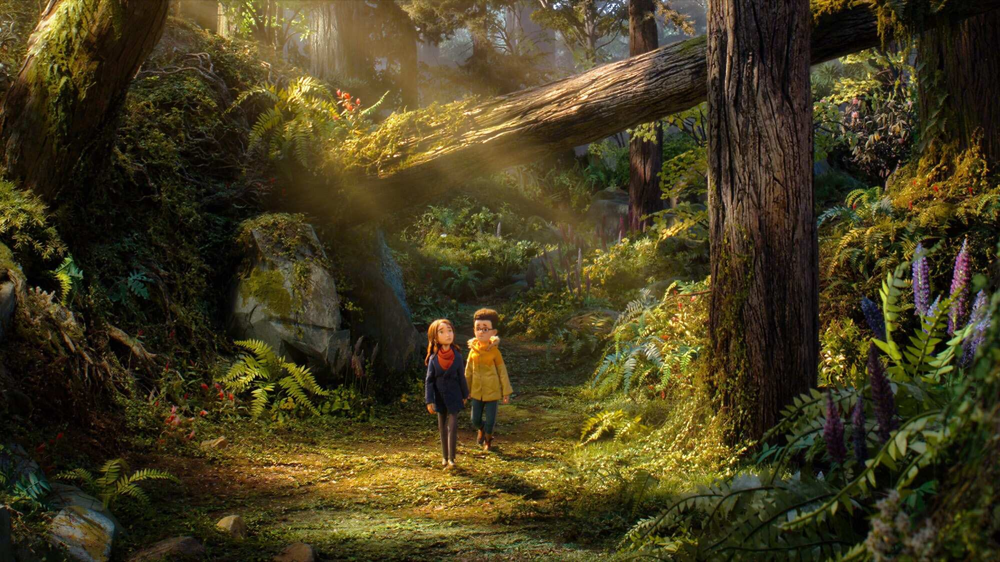
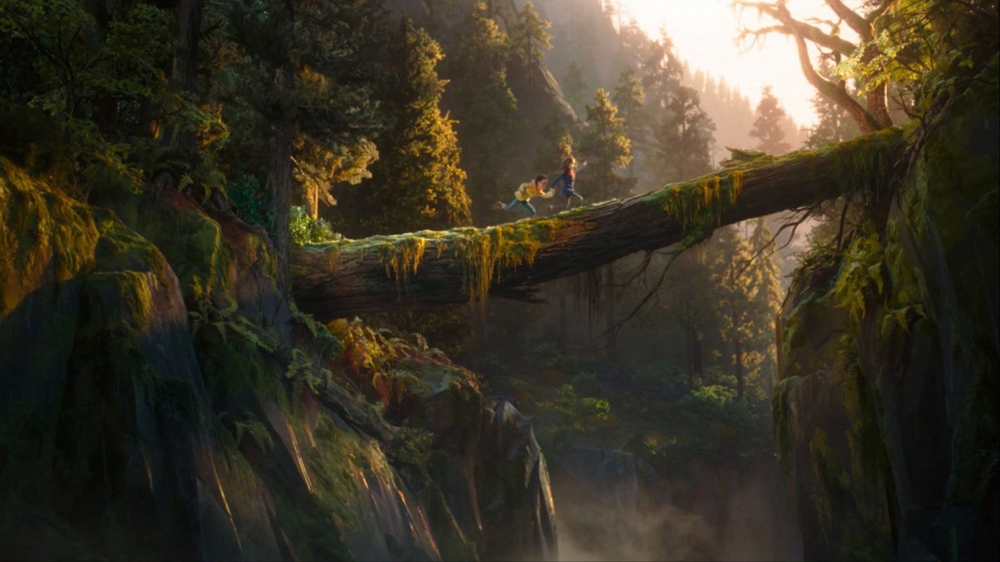
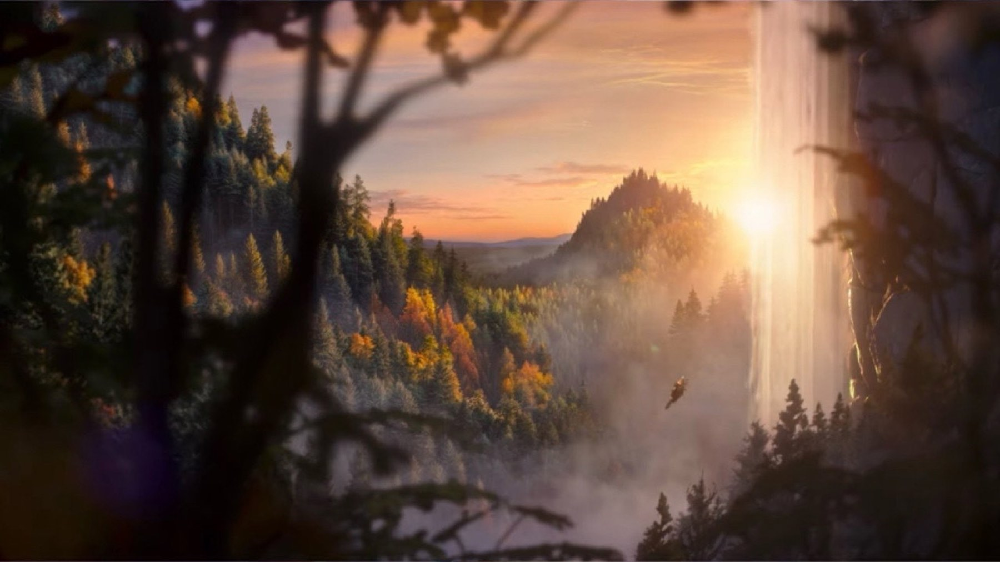
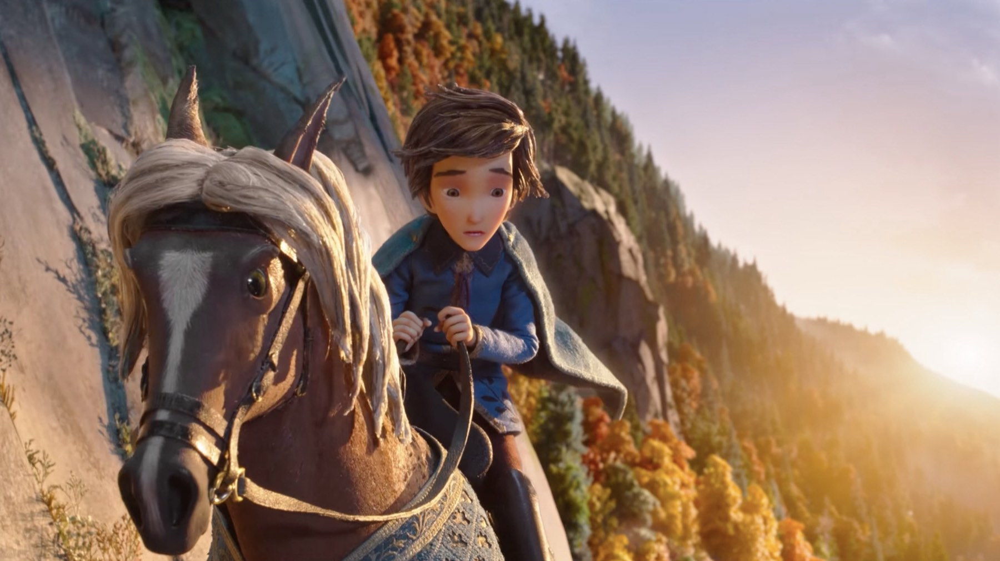

Wildwood: il film Laika da 100 milioni che la critica adora
Stop-motion lunga più di due ore, un bosco segreto oltre Portland e una critica quasi unanime. Il problema, per Laika, sono i biglietti.
Un'opera in stop-motion lunga più di due ore, costata circa 100 milioni di dollari, che una parte della stampa americana già chiama il capolavoro di Laika e che nello stesso momento viene data come uno dei grandi flop dell'anno. Wildwood - I segreti del bosco proibito, nelle sale italiane dal 22 ottobre, è una delle vicende più curiose di questa stagione, perché racconta due destini diversi: quello che vedono i recensori e quello che vedrà il botteghino.
Precisiamo come lavoriamo: qui mettiamo in fila ciò che hanno scritto le recensioni che abbiamo letto, dichiariamo dove le opinioni si dividono e aggiungiamo la nostra posizione su cosa aspettarsi.
Di cosa parla Wildwood
La protagonista è Prue McKeel, adolescente testarda di Portland, nell'Oregon. Quando il fratellino viene rapito da uno stormo di corvi, Prue li segue oltre il limite della città e arriva in un bosco nascosto, dove animali che parlano e banditi si contendono il territorio, perché nessuno vuole cedere un metro di bosco. È l'adattamento dei romanzi di Colin Meloy, illustrati da Carson Ellis. La regia è di Travis Knight, già dietro Kubo e la spada magica, e la sceneggiatura di Chris Butler. Nelle voci originali Prue ha quella di Peyton Elizabeth Lee, mentre intorno a lei trovate Jacob Tremblay e Carey Mulligan, perché lo studio ha puntato su un cast pieno di nomi noti.

Cosa dice la critica
Il quadro è molto netto, perché i voti alti si ripetono. Alle prime recensioni, una quindicina, Rotten Tomatoes segnava un 100% pieno; più avanti Metacritic si è fermato su 85. Il Telegraph ha dato cinque stelle su cinque, definendolo il film in stop-motion più bello mai realizzato. Su ScreenRant il voto è 10 su 10, mentre Collider dà 9 su 10 e loda sequenze che lasciano senza fiato; IGN, invece, si ferma a 8 su 10.
Ci sono anche voci meno entusiaste, ed è giusto riportarle. The Guardian assegna tre stelle su cinque, IndieWire un B-. Sono giudizi alti per qualunque altro film, ma segnalano che qualcuno trova la storia meno incisiva dell'impresa tecnica. Perciò, più che di unanimità, si tratta di un consenso largo con qualche riserva sulla scrittura.
Tra i toni più alti, Variety lo definisce un risultato formale e insieme un film capace di piacere a più generazioni, mentre The Hollywood Reporter lo descrive come lo sforzo più ambizioso di Laika e forse il suo capolavoro. TheWrap arriva a metterlo tra i film d'animazione più sorprendenti di sempre. Sono parole da trailer, certo, però arrivano da testate che di solito pesano gli aggettivi, quindi non le liquidiamo.
Anche chi lo ama non lo mette al primo posto assoluto. Su World of Reel è considerato il migliore di Laika, davanti a Coraline e a Kubo, ma non il migliore della stop-motion: per l'autore resta davanti Fantastic Mr. Fox di Wes Anderson. La stessa pagina ricorda la battaglia del secondo atto, circa mezz'ora di animazione, come uno dei momenti più forti dell'intero film.
Uno sforzo fuori scala per la stop-motion
I numeri aiutano a capire perché se ne parli. Il film dura 132 minuti e la stampa americana riporta oltre 142.000 elementi 3D creati, con più di tre anni di riprese. Inoltre è il primo film Laika classificato PG-13 negli Stati Uniti, quindi il tono è più adulto: la guerra nel bosco comporta anche delle morti. La prima mondiale è stata al BFI London Film Festival l'11 ottobre.

Perché Laika conta
Con Coraline e Kubo lo studio ha costruito una reputazione rara: film fatti con pazienza artigianale, spesso più scuri di quelli dei concorrenti, amati da chi li scopre e raramente trasformati in grandi incassi. Wildwood porta questa idea al massimo, con una durata da kolossal e un budget da produzione hollywoodiana. Ecco perché diversi recensori lo trattano come un momento decisivo e non come una semplice uscita autunnale.
Il problema dei biglietti
Laika ha una fama da ripetere: grandi film amati, incassi mai all'altezza. Il riesame di Coraline nel 2024 ha superato i 52 milioni di dollari nel mondo, ma per Wildwood le previsioni americane per il weekend d'apertura parlano di 5-10 milioni, 6-8 secondo altre stime, contro un budget di circa 100 milioni. Esce inoltre nella stessa settimana di Clayface, quindi si ritrova contro un concorrente più popolare. Dall'ultimo film dello studio, Missing Link, sono passati sette anni, perciò il pubblico non ha un'abitudine da riprendere.
Per noi è questo il punto che rende il film interessante da vedere subito. Un'opera di questa scala, fatta a mano, ha poche occasioni di arrivare in sala. Se funziona al cinema, Laika può permettersi altri film così; se non funziona, lo scopriremo quando sarà troppo tardi.

A chi lo consigliamo
Prima di decidere guardate quattro cose. Primo: la durata, 132 minuti, lunga perché molti lo vedranno con dei ragazzi. Secondo: il tono, più duro di Coraline o ParaNorman, con una guerra nel bosco al centro della storia. Terzo: la versione, perché nell'originale le voci di Mulligan e Ali contano molto nel racconto del film come evento; controllate nella vostra sala quale versione è in programmazione. Quarto: la sala, perché una scenografia fatta a mano si apprezza su uno schermo grande.
A chi ha amato Kubo e la spada magica, dello stesso Travis Knight, e a chi cerca un fantasy per ragazzi e adulti insieme, Wildwood sembra rivolgersi in modo diretto. A chi preferisce un'animazione veloce e comica, invece, forse no.
Vale la pena andare al cinema?
Sì, se vi piace l'animazione che si riconosce fatta a mano, con pupazzi e luci reali. Dura più di due ore e ha un tono più cupo del solito per Laika, perciò non lo consigliamo alla cieca ai bambini più piccoli. Se invece cercate un fantasy di formazione con un mondo costruito pezzo per pezzo, allora è una delle uscite più curiose dell'autunno. Una candidatura all'Oscar come miglior film d'animazione sembra, a detta di diversi osservatori americani, molto probabile.
Una scommessa enorme, fatta a mano e ben accolta dalla critica. Non tutti i recensori ne amano la storia, ma l'impresa merita il grande schermo. Da vedere in sala, prima che esca dai cinema.
Domande frequenti
Quando esce Wildwood in Italia?
Nelle sale dal 22 ottobre 2026, dopo un'anteprima il 14 ottobre ad Alice nella città.
Di cosa parla Wildwood?
Prue McKeel, ragazza di Portland, segue i corvi che hanno portato via il fratellino e si ritrova in un bosco nascosto, popolato da animali parlanti e da fazioni in guerra.
Quanto dura il film?
132 minuti, cioè 2 ore e 12: secondo la stampa americana è il film in stop-motion più lungo mai uscito.
Wildwood è adatto ai bambini?
Negli Stati Uniti ha la classificazione PG-13, la prima per un film Laika, perché racconta una guerra con delle morti. Per i più piccoli conviene valutare caso per caso.
Fonti consultate (6)
- TMDB – Wildwood - I segreti del bosco proibito
- SlashFilm – Can Wildwood overcome its big budget and become a box office hit?
- 80.lv – Laika's stop-motion film Wildwood debuts with 100% on Rotten Tomatoes
- World of Reel – Wildwood earns rave reviews
- World of Reel – Wildwood is a $100M-costing stop-motion triumph
- Fiction Horizon – Laika's Wildwood lands a perfect Rotten Tomatoes score